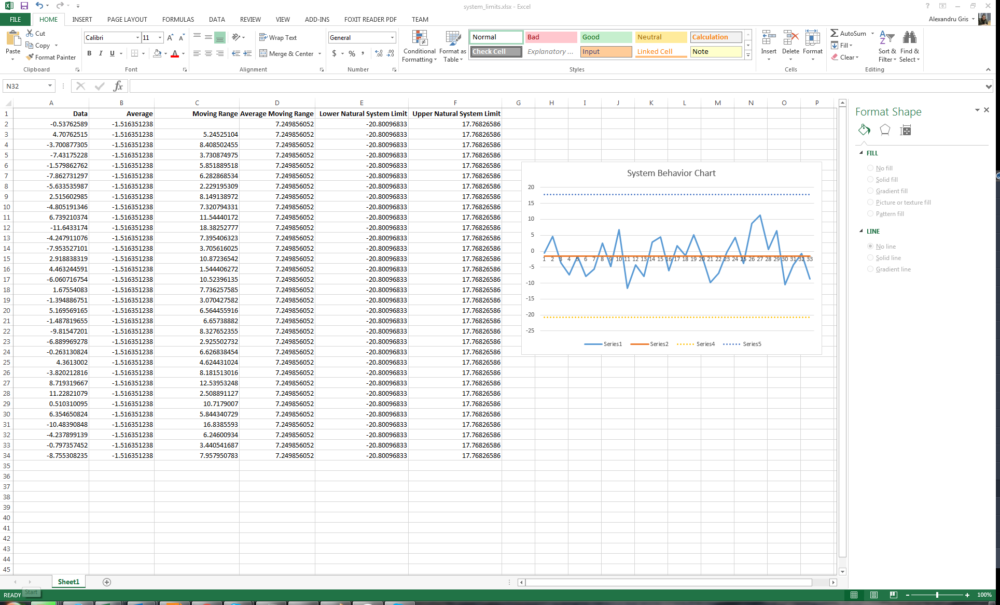
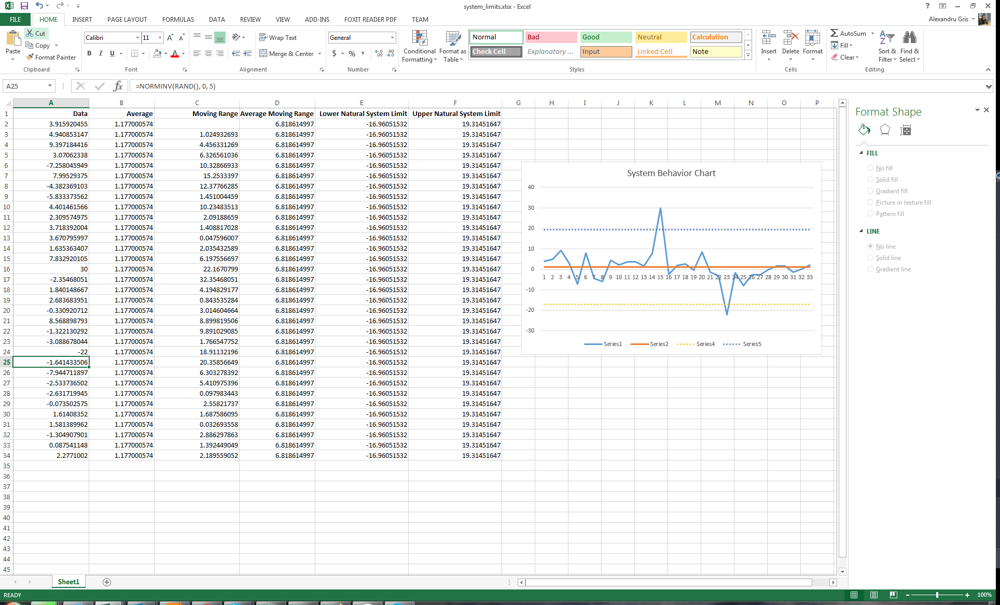
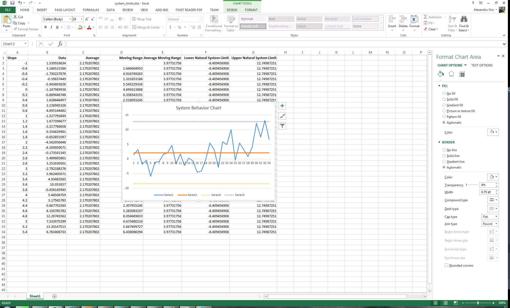
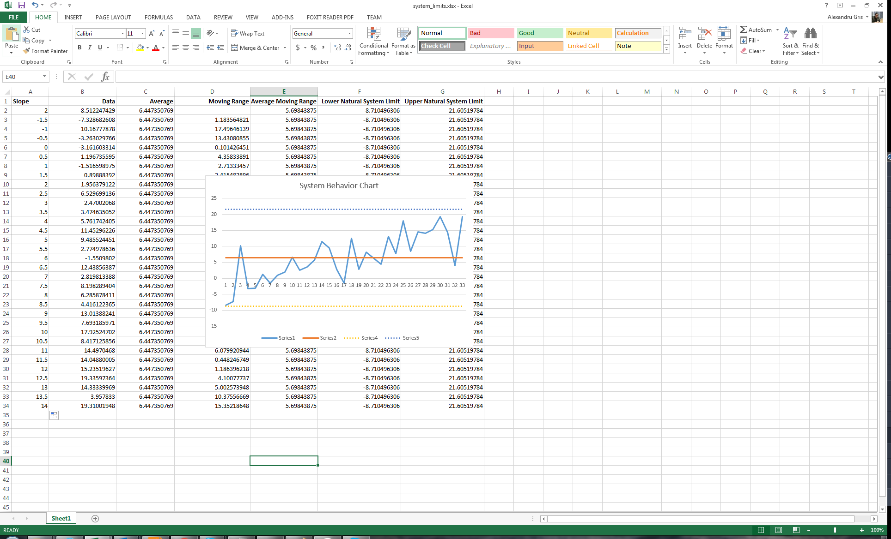

Short Intro To Reading System Behavior Charts
Intervention in a system based on incorrect assumptions about data generated by it demonstratably leads to worst future behavior than in the case of non-intervention. However, in most cases, our bias to action or external pressure force us to make changes, leaving the system in a worst shape. Assuming a system is producing consistent data, how do we know when or if to intervene? This article introduces the notion of System Behavior Charts which is tightly connected to any methodology that has the aim of continuous improvement.
Definitions
- System behavior chart - a chart that plots system output data over time
- Noise - normal variation occuring from one measurement to the next
- Signal - meaningful variation, something we should act on.
- Upper / lower natural system limits - the limits within which the system produces naturally varying output
The problem to solve: how do we know when we are dealing with noise and when we have a real signal
Plotting the system behavior chart
The system behavior chart looks like this:

Columns:
- Data is the data we want to plot over time
- Average is the average of the data - single value, computed as a column to simplify charting.
- Moving range is the absolute delta of two consecutive measurements
- Average moving range is the average of all moving ranges - single value
- Lower / upper natural system limits are computed as
system average +/- 2.66 * moving range- single values (these are about 3 sigma in one direction, so 6 sigma in total, meaning that 99.7% of all values should be between upper / lower natural system limits)
Please note that you don't need a lot of measurements to compute meaningful system parameters and that, after an intervention is performed, new system parameters need to be computed again and behavior chart updated for future data.
When to intervene
There are several rules to look for:
- Any point that is below the lower system limit or above the upper system limit is a valid signal which needs to be investigated.
- Three out of four points closer to the system limit than to the average (do not need to be on the same side of the average!)
- Eight or more consecutive points on the same side of the average
- Repeating patterns of cycles
It is important to note that in some of the cases, the rules above might not be obvious to the naked eye and signals can be hidden in plain sight. The reverse is true as well; where signal might appear as obvious, there might be simply a statistical error. Therefore, computations must be performed.
Below are some examples of valid signals, conforming to the rules above:



Please remember that blind comparison to the average without taking into consideration the full context of data or limited comparisons to a small amount of past data do not contribute to a good understanding of the system. A real understanding means identifying signals and trends. Actions derived from a poor system understanding will only amplify local errors, causing oscillations erratic behavior.
Happy play with numbers. :)